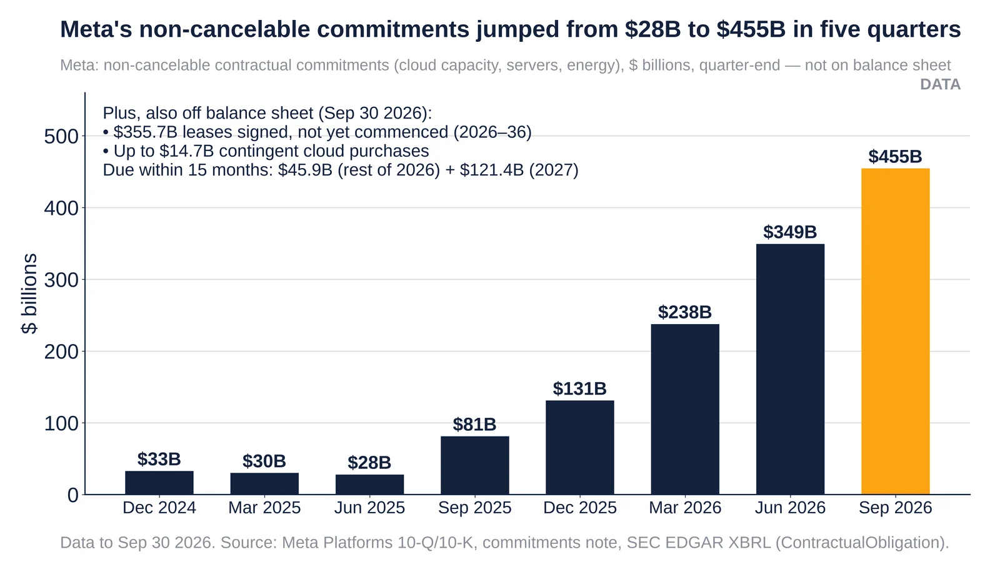

Q4. Off-Balance-Sheet Exposure

- About $1.2T of data-center leases have been signed but have not yet commenced, so they are off the balance sheet. The amounts are Meta $355.7B (Sep-26), Microsoft $329.1B (Jun-26), Oracle $288B (Aug-26), Amazon $137.2B (Jun-26) and Alphabet $85.2B (Jun-26). Total signed-but-undelivered commitments are about $2.8T. (source)
- Growth is steep. Meta's figure rose from $58B to $356B in a year, about 6x. Oracle's went from $43B (May-25) to $288B, Microsoft's from $93B to $329B, and Alphabet's from $24B to $85B. (source)
- WSJ: Big Tech's AI spending is '$3 trillion higher than it seems' once off-balance-sheet obligations are counted. (source)
- The obligations are off the balance sheet and growing far faster than revenue: about $1.2T of uncommenced leases plus Meta's $41.5B maximum RVG and Alphabet's $43.8B of backstops. (source)
- Disclosure under ASC 842 is fairly transparent. The leases appear in footnotes, and investors such as WSJ, Reuters and ratings agencies are pricing them. (source)
Source: Company 10-K/10-Q (ASC 842) via ahasignals.com, ccir.io; Oracle 10-Q Aug-26; WSJ Aug 2026 analysis.
https://ahasignals.com/research/uncommenced-lease-commitments/ https://ccir.io/credit/commitments https://www.sec.gov/Archives/edgar/data/1341439/000119312526389274/orcl-20260831.htm https://www.wsj.com/tech/ai/why-big-techs-ai-spending-is-3-trillion-higher-than-it-seems-e1067bb2

Meta's off-balance-sheet purchase commitments reached $454.5B at Sep 30 2026, separate from $355.7B of uncommenced leases. Source: Meta 10-Q.
- Commitments were $27.95B at Jun 30 2025 and $454.52B at Sep 30 2026, mostly third-party cloud capacity, servers, network gear and energy agreements.
- Of that, $45.85B is due in the rest of 2026 and $121.41B in 2027. There are also up to $14.72B of contingent cloud purchases.
- Separately, Meta has $355.7B of leases signed but not commenced (2026–2036), also off the balance sheet.
- Amazon comparison, Sep 30 2026: total commitments $883.6B. About $438B of that is not on the balance sheet (leases not commenced $164.9B, property and equipment $159.6B, purchase obligations $94.8B, other $19.0B).
Note: Not a duplicate of the lease chart above: that chart plots leases signed but not yet commenced (Meta $355.7B); this one plots Meta's separate non-cancelable purchase commitments ($454.52B at Sep 30 2026, SEC XBRL ContractualObligation). The two should not be added together without checking for overlap.
Sources: Meta 10-Q, quarter ended Sep 30 2026 (SEC) SEC EDGAR XBRL company facts, Meta Amazon 10-Q, quarter ended Sep 30 2026 (SEC)